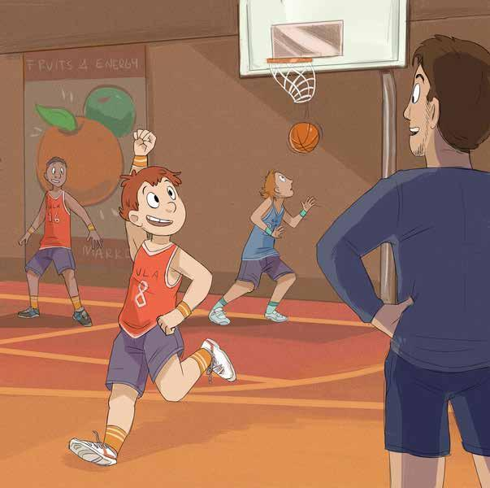
Josh ran back to his position on the court. He was grinning.
‘Great shot, Josh!’ called out Mitch, his coach.
Josh felt happier than he had for ages. It felt great to be part of the team.
Pages 1–2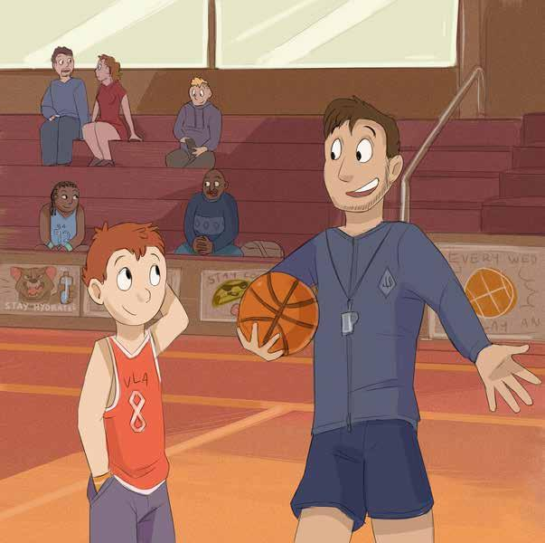
‘Hey, Josh!’ Josh turned to see Mitch jogging towards him.
‘We’ve got a big game next Saturday. Do you reckon your dad would be able to come along to referee for us?’
Josh looked down.
‘Um, there’s a bit of a problem, Mitch – Dad’s away.’
‘Oh, is he away for work again?’
‘Ah, no, not really, he’s…’
Pages 3–4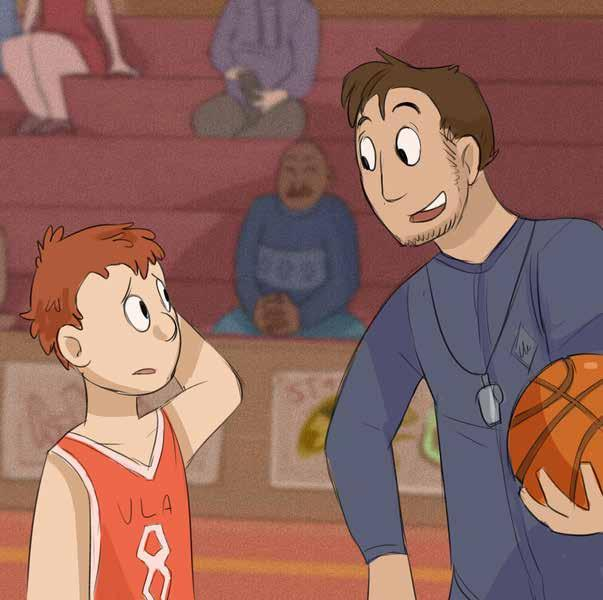
‘Look, no problem, Josh. I can ask Tim’s dad,’ Mitch said.
Josh felt he was holding out on Mitch. He looked at Mitch. ‘It’s just that…’
His voice faded away.
‘No worries, Josh. But if there’s something I can help with, I’m here!’
Mitch smiled and walked over to get his things. ‘See you next Saturday!’
Pages 5–6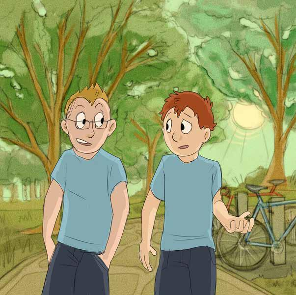
Before school the next day, Josh was talking to his friend Max. ‘So how was the game last night?’ Max asked.
‘It was really cool – I scored seven points. Mitch was pleased,’ Josh told him.
‘He’s a great coach, isn’t he?’ said Max.
‘Yeah.’ Josh’s grin faded. ‘But I felt bad afterwards. Mitch asked if Dad could come to the game next week to referee.’
‘So what’s the problem? Your dad can’t make it?’
Pages 7–8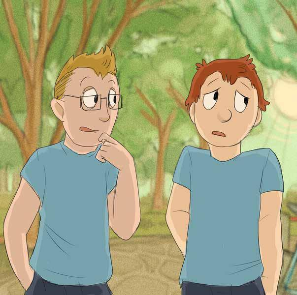
‘That’s right,’ said Josh miserably. ‘He’s …’
‘Does he have to go up north again for work?’ asked Max.
‘No,’ said Josh. ‘He’s … away.’
‘Well, where is he?’ Max asked.
‘I don’t want to talk about it!’ Josh snapped.
Pages 9–10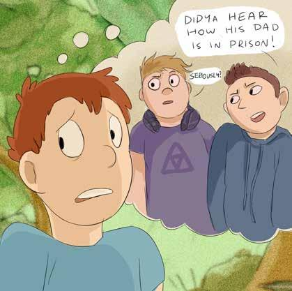
Josh looked even more miserable.
‘Are you OK, Josh?’ Max asked. ‘You got in that fight with Tim last week…’
‘Well, it’s because of my dad,’ Josh said.
‘How do you mean?’ Max asked.
‘Look, he’s in prison! All right?’ Josh blurted out.
‘In prison?’ Max was surprised. ‘But you never said anything …’
‘No, I didn’t want everyone to know. Imagine what Jack and those guys would say if they found out!’ Josh said.
Max could imagine it. Those guys could be mean.
Pages 11–12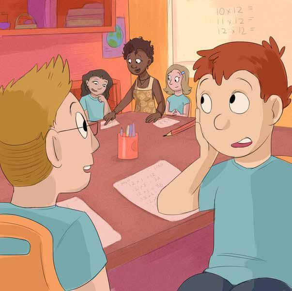
‘Well, it’s your business,’ said Max. ‘It’s up to you who you want to tell.’
Josh felt a bit better. Max was a real mate.
‘I wouldn’t mind telling Mrs Wilson, our teacher,’ said Josh. ‘She’s cool, but I think she’s been really disappointed in me lately. Especially since I got in that fight with Tim!’
‘It’s not really like you to get in a fight, is it?’ asked Max.
Pages 13–14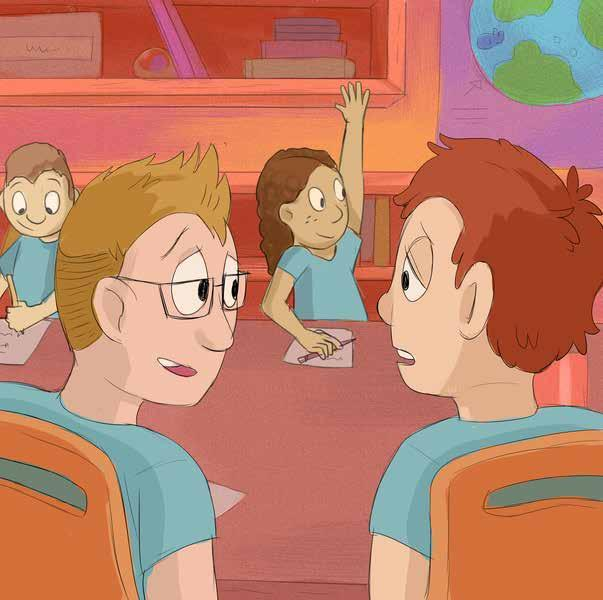
‘Normally I can take care of myself,’ said Josh, ‘but lately I can’t think straight. I don’t really know how I feel – I can’t explain it.’
‘Well, that’s fair enough,’ said Max. ‘It must be tough, with your dad in prison. No wonder you’re feeling a bit confused.’
‘Yeah, it is tough. And not just for me. It’s hard on Mum and Abbie, too.’
Max nodded.
Pages 15–16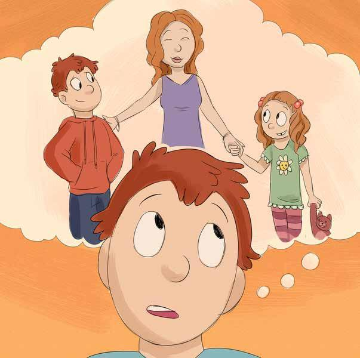
‘And Abbie’s only six,’ Josh said. ‘She doesn’t really understand what’s going on.’
‘At least your mum told you, and you know where your dad is,’ said Max.
‘Can you see him?’ Max asked.
Pages 17–18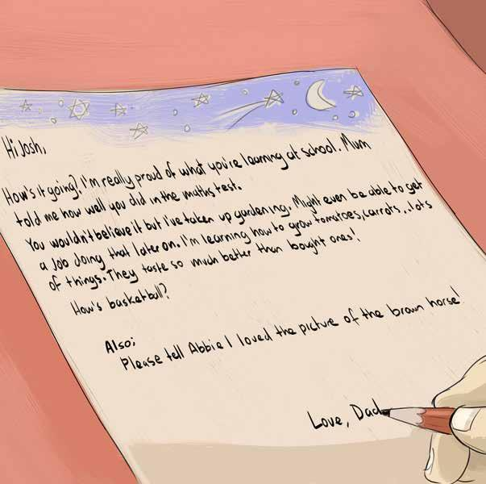
‘I get to see him sometimes. And I can write to him. He says he’s not great at writing. But I don’t mind that. I wish he’d write to me more,’ said Josh.
‘So what about Abbie?’ Max asked. ‘She’s too little to write much.’
Pages 19–20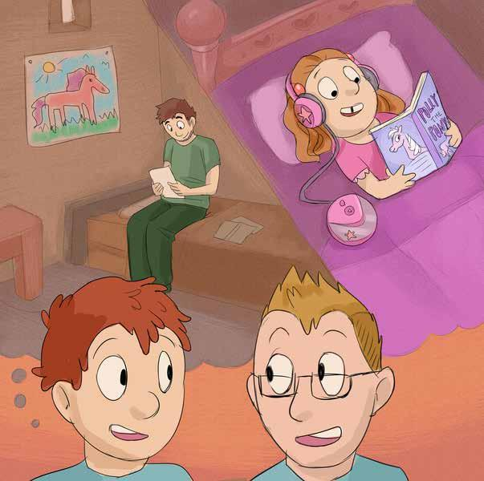
‘You know she’s mad about horses?’ Josh said. ‘Abbie keeps drawing pictures of horses to send Dad.’
Max laughed. ‘Last time I was at your house, Abbie drew me a horse to take home and put on the fridge!’
‘That’d be right. Dad reads horse stories on to a CD from prison, for her to listen to at bedtime. She loves it,’ Josh said.
Pages 21–22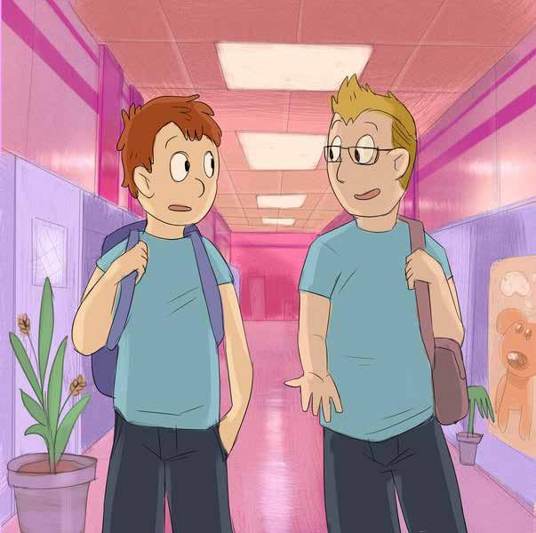
Josh was thinking.
‘You know, talking about telling Mrs Wilson…’
‘Yeah?’ Max asked.
‘Well,’ Josh said, ‘I think I might.’
‘Good idea,’ said Max. ‘I bet she’d like to know what’s going on. She knows you haven’t been yourself lately.’
Pages 23–24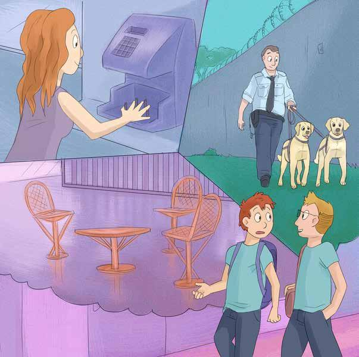
‘Are you going to see your dad again soon?’ Max asked.
‘Yeah, Mum’s still mad at him. But she said we could go to see him in the school holidays.’
‘So what was it like at the prison?’ asked Max.
‘It was kind of scary,’ said Josh, ‘especially for Abbie. There are these really high walls with wire. And it’s not like being with Dad at home. There’s not much to do there. It feels kind of weird.’
Pages 25–26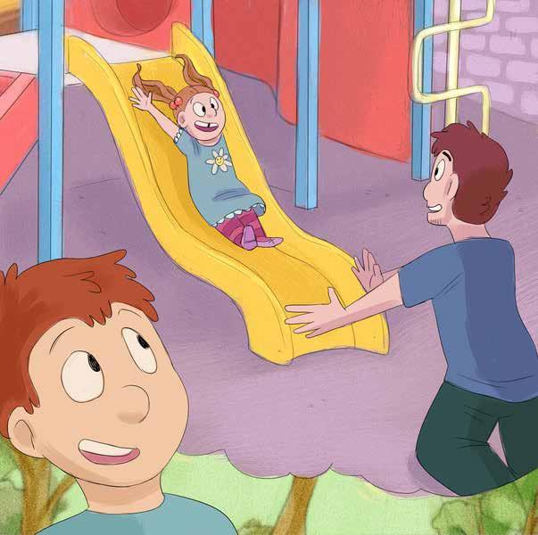
‘Yeah, I see what you mean,’ said Max.
‘But,’ said Josh, looking brighter, ‘Dad said he might be moved to minimum security soon. That’d be heaps better for visiting – he said there’s an outside playground there for the kids. Abbie would love that.’
Max nodded. ‘Yeah, I get that. And at least your dad wants to see you.’
Josh looked at his friend. Max’s dad wasn’t around much.
Pages 27–28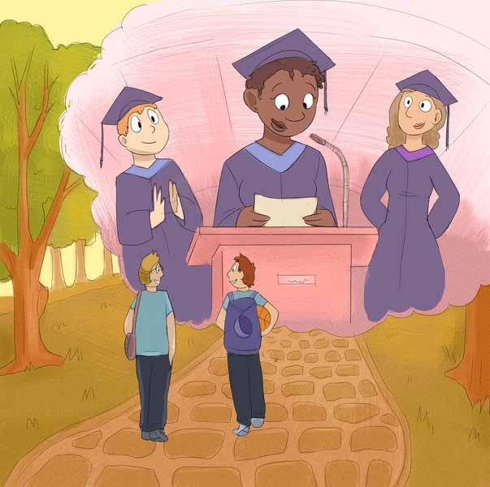
‘Dad wants me to do well at school,’ Josh continued. ‘He thinks it’ll give me better chances than he had.’
‘I guess that’s right,’ said Max. ‘Mrs Wilson says the same thing. She said she didn’t have it easy when she was young. She was really proud when she graduated and got a good job to support her family.’
‘Dad told me that sometimes kids can come to a Homework Club at the prison and see their parents there,’ said Josh.
‘That’d be OK!’ Max said.
Pages 29–30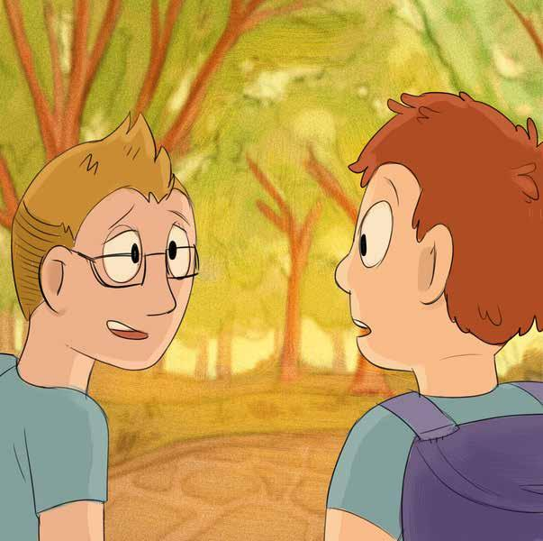
‘So have you had a letter from your dad lately?’ Max asked. ‘Or can you text him?’
‘No, I haven’t had a letter in a while. And things like texting, email and Facebook aren’t allowed in the prison.’
‘That’s tough on you,’ said Max.
‘Yeah, but sometimes it’s tough for Dad, too,’ Josh replied.
‘Sometimes he doesn’t feel like writing. Nanna told me it’s not that Dad doesn’t love me. She said that when he feels down, he goes sort of quiet and doesn’t talk much. Nanna said Dad was like that even when he was a kid.’
Pages 31–32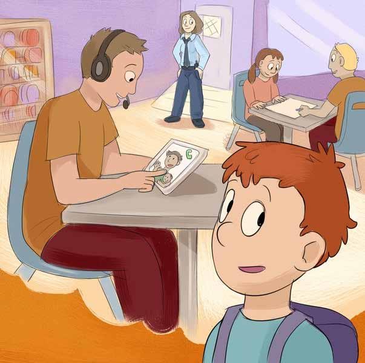
‘I wish we could phone him,’ Josh said, ‘but we’re not allowed to do that. We have to wait for him to ring us.’
Max was surprised.
‘There’s only one phone where he is, and it’s pretty expensive to make calls,’ Josh told Max.
‘Sometimes things come up and he can’t make the call when he said he would.’ Josh looked a bit down.
‘That sucks,’ Max said. ‘I’ve heard some people can Skype their mum or dad in prison. Could you do that?’
‘I’ll ask Dad about that,’ Josh said.
Pages 33–34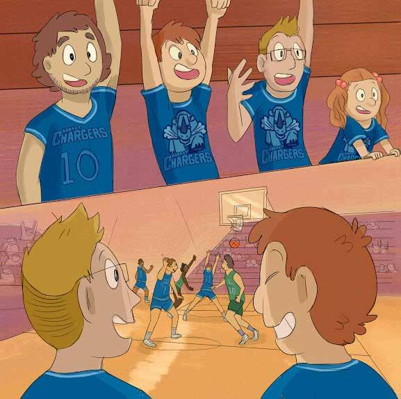
‘Well, back to the basketball situation,’ said Max. ‘What about seeing if your Uncle Brendan could referee? He’s really keen on basketball, isn’t he?’
‘Yeah, Uncle Brendan’s cool!’ said Josh. ‘He’s taking me to a Hobart Chargers game again next weekend.’
‘Wow!’ Max felt a bit jealous. ‘Do you think he’d take me, too?’
‘I reckon,’ said Josh. ‘And I can’t wait until Dad can come with us!’
‘Maybe tell your dad that,’ said Max. ‘I think he’d like to know.’
Josh felt happy. It was good to have a mate like Max.
Pages 35–36A note the book makes, and we would repeat
Josh and Abbie are not real people. But there are a great many children with a parent or close family member in prison, and for them this is not a story.
If you are one of those families, the practical side — visits, phone calls, what to tell a school — is set out in our phone guide.
Stay Connected →Waiting for Dad: A story about supporting a friend. Written by Mary Koolhof. Illustrated by Mich Omen. © The Salvation Army Australia Southern Territory 2017. ISBN 978-0-648-04062-0. Reproduced with permission.
Developed and produced by The Salvation Army and Communities for Children South East Tasmania, funded by the Australian Government Department of Social Services. The Onesimus Foundation was among the contributors to the original book.
Reading-together questions prepared by the Onesimus Foundation. They are not part of the original publication.